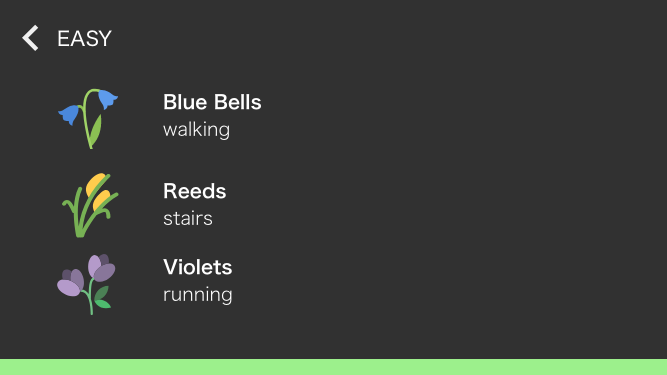
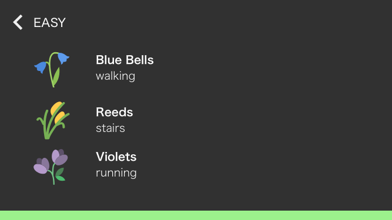

I then began sketching my general idea before translating it to Adobe XD. INSERTINSERT SKETCH IMAGES
Elizabeth Stowell is a PhD candidate in the Personal Health Informatics program at Northeastern University’s College of Computer and Information Science and Bouvé College of Health Sciences. I had the opportunity to work with her on an exer-game (exercise game) intended for caregivers of patients living with Alzheimer's disease.
When I entered the project Lily had already done the research to show that caregivers often suffer from poor health outcomes due to the amount of time they spend caring for their loved one. She asked me to help with the visual and interaction design of the game, which was determined to have a gardening theme.
I began by reading two papers Lily sent me to get acquainted with the material and findings of existing research.
I then began exploring different types of games (not necessarily exergames, but many were in that realm) for inspiration. I mainly sought to find out how games encouraged activity if applicable and kept users engaged and coming back day after day.
I then read a ton of research papers about different types of exergames
| Paper | Target Population | Game Description | Targetted Health Behavior |
|---|---|---|---|
| Let's All Get Up and Walk to the North Pole: Design and Evaluation of a Mobile Wellness Application | Sedentary Adults - Prone to obesity, type 2 diabetes, heart disease | Team cooperates to walk to virtual destination by accumulating a number of steps | Walking |
| Fitster: Social Fitness Information Visualizer | Busy people struggling to exercise | Visualize pedometer data to support activity tracking, goal setting, and motivation through teamwork and competition | Walking |
| Tracking and Sharing Daily Activity Levels with Unaugmented Mobile Phones | Adults who do not currently achieve the minimum recommended daily activity level | Facilitate the sharing and comparison of data between peers, tracking walking, running, etc | Walking, running, other physical activity |
| Game Design Principles in Everday Fitness Applications | Runners | Players are messengers in massive game world, uses nike + iPod hardware | Running |
| HealthyTogether: Exploring Social Incentives for Mobile Fitness Applications | 20-30 year olds | Two-person groups either cooperate, compete, or hybrid mode to accomplish a number of steps / floors as measured by a fitbit and app on android | Number of steps, number of stairs, social interaction |
| Long-Term Use of Motion-Based Video Games in Care Home Settings | Older adults in residential care | 4 different games - 2 that are based on hand motion in a game, 2 that are based on actual motions such as chopping, shaking, extending hands (see table 2) | Motion in older adults |
| Design and Evaluation of a Networked Game to Support Social Connection of Youth with Celebral Palsy | Young adults with Cerebral Paulsy | Networked game played using a stationary recumbent bicycle and Logitech wireless game controller. Players pedal to move their avatars, aim using a joystick and invoke game actions with a single button | Exercise and social interaction between youth with cerebral palsy |
| Need Satisfaction Supportive Game Features as Motivational Determinants: An Experimental Study of a Self-determination Theory Guided Exergame | Insufficiently active young adults who play video games | Narrative-driven gameplay that incorportates both dancepad and wiimote | General physical activity |
| Investigating the Long-term Use of Exergames in the Home with Elderly Fallers | Elderly adults who are post-fall | 4 games for main rehab exercises (see table 3) | Motion in older adults |
| Name | Game Play |
|---|---|
| Candy Kids | Feed a child dif types of candy by nagivating avatar over pictures of food at top of screen |
| Prarie Hunter | Virtual animal hunt, move on screen crosshairs over an animal |
| Cooking Challenge | Prepare a salad, imitate chipping motion, pushing ingredients, mixing gesture |
| Harvest Time | Chopping motion to cut down tree, shake hands until apple drops, hand apple by extending arm |
| Name | Targetted Exercise | Game Play |
|---|---|---|
| Pigeon Express | Sit to Stand Exercise | Collect fruit by sitting/standing to control bird flight path |
| River Gem | Side Step Exercise | Step side to side to control direction of jumps and collect gems |
| Panda Peak | Marching Exercise | Control the walk of a panda by marching on the top, attempt to reach top of hill |
| Horse Hurdles | Knee Bends Exercise | Control a racehorse that jumps over hurdles - bending knees = go faster, stand = jump |
My first step in actually designing this game was brainstorming based on my research into other games and conversations with Lily.
I then began sketching my general idea before translating it to Adobe XD. INSERTINSERT SKETCH IMAGES
 

My first iteration focused on selecting a plot to "plant" in and then selecting an item. My initial thought was to sort the plants by difficulty of exercise (e.g. a sunflower would take 60,000 steps to complete whereas a bluebell would only need 10,000.) I ultimately scrapped this idea though because I didn't want users to feel limited by the difficulty level or stressed by not being able to achieve goals.
For the second iteration I switched from a difficulty-based selection to a coins system, wherein users receive coins for their activity level relative to their goals. We opted to make the coins relative to goals because with the time consuming nature of caretaking, setting a hard limit or requirement could pose too much of an impediment for some users.
The seed shop was then converted to use coins, which would allow users to save up for a particular plant, making an item they desire accessible.
I also developed the drag and drop mechanism for placing plants in various plots in the user's garden.
Once a plant has been selected it can be placed in any available square. If the user decides not to place it they can drag it onto the trashcan icon which occupies the space where the seed shop previously was.
Once the item has been placed it is "planted" and the plot turns green as well as displaying the image of the selected plant.
This week I switched gears and focused on the social aspect of the game. Lily emphasized the importance of interaction between users because caretakers tend to be isolated from their peers due to the time intensive nature of their care-taking duties.
It was important to ensure that interactions between users would be positive and not provide any additional stress, either due to negative messages or due to the pressure of needing to respond.
We decided to go with the motif of sunshine because it has a positive connotation and fits into the theme of gardening. This allows for a simple positive interaction between users.
We also decided to add the concept of a "team plant" that would allow users to come together and work towards a shared goal.
A team plant has no cost, but is only added to each user's garden when all members of the team have completed their weekly goals.
We chose to make completion relative to individual goals in order to avoid shaming any member of the team or placing unequal responsibility on anyone.
Once a team plant has been started a progress indicator is placed in the top right corner of the screen. Once all participants have completed their goals the plant will become accessible to all team members.
Clicking on the progress indicator will bring up a description of the team plant.


It was important to Lily that there been a way to differentiate between exercise that consists of steps and stairs and exercise that is logged (e.g. strength exercises).
I added the concept of watering the plants in the garden. Watering cans become available once a certain threshold has been reached (shown in blue above the navigation menu) and then they can be accessed in the seed shop and used.
Since the age of users varies enormously and because many of them are likely to not be familiar with specific exercises it became a priority to make exploration an easy option. The exercises are broken into three categories for each navigation.
Once a user has actually completed an exercise they will log it in the app. If they know the exact name of the exercise they can easily search for it, otherwise they can work their way down through the categories.

When the user selects the specific exercise they completed they are asked to log the number of minutes (or repetitions, depending on the exercise) and provide a reflection if they so choose.